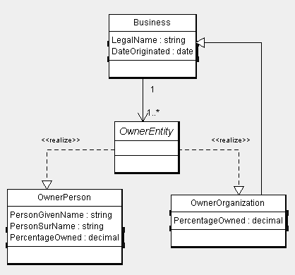
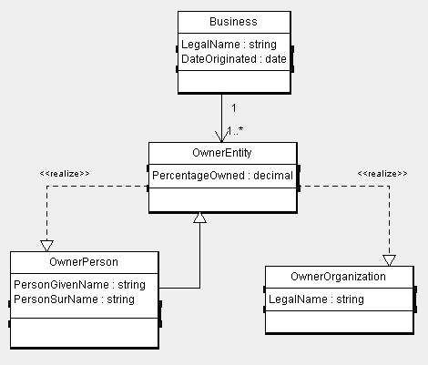

Abstracts are an important means by which a general object can be defined at “design-time” and appropriate substitutes made at “run-time” depending on the scenario.
Explicitly Declared Abstract
As mentioned in the options section, abstracts can be represeneted in two manners within XSD; either through the use of a xsd:choice element or through the use of substitution groups. Each method and example schema snippets are provided for both.
Substitution Group Approach (Preferred)
If substitution groups are used to represent the abstract, the abstract class would be an abstract element declaration and the valid substitutes would be denoted with the substitutionGroup attribute.

. . .
<xsd:complexType name=”BusinessType”>
<xsd:sequence>
<xsd:element ref=”LegalName”/>
<xsd:element ref=”DateOriginated”/>
<xsd:element ref=”OwnerEntity”/>
</xsd:sequence>
</xsd:complexType>
<xsd:element name=”OwnerEntity” abstract=”true”/>
<xsd:element name=”OwnerPerson” type=”OwnerPersonType” substitutionGroup=”OwnerEntity”/>
<xsd:element name=”OwnerOrganization” type=”OwnerOrganizationType” substitutionGroup=”OwnerEntity”/>
. . .
Choice Approach (Limited Usage)
If represented as a choice, the same abstraction could be represented by omitting the abstract from the schema and instead providing a series of choice elements as the following:
. . .
<xsd:complexType name=”BusinessType”>
<xsd:sequence>
<xsd:element ref=”LegalName”/>
<xsd:element ref=”DateOriginated”/>
<xsd:choice>
<xsd:element ref=”OwnerPerson”/>
<xsd:element ref=”OwnerOrganization”/>
</xsd:choice>
</xsd:sequence>
</xsd:complexType>
<xsd:element name=”OwnerPerson” type=”OwnerPersonType”/>
<xsd:element name=”OwnerOrganization” type=”OwnerOrganizationType”/>
. . .
Usage of choice is far more restrictive than abstract declarations & substitution groups and may cause erroneous representations when cardinality is something other than 1..1. In the above example, if choice was used in the schema, at runtime, the owner could be EITHER a collection of people OR an series of organizations, not a combination of both. This limitation does not exist when the substitution group approach is used.
Choice has also been provided for through the use of stereotypes discussed in the stereotypes section.
Implicit Realization
Substitution Group Approach (Only Option)
In Argo as well as in XSD, a class need not be defined as abstract in order to leverage substitution/realization capabilities. The realization arrow may be used in any number of classes, however in XSD this sort of realization must be accompanied by a generalization (whether included in the diagram or not). The following depicts another example and how it might appear in schema:

. . .
<xsd:complexType name=”OwnerEntityType”>
<xsd:sequence>
<xsd:element ref=”PercentageOwned”/>
</xsd:sequence>
</xsd:complexType>
<xsd:complexType name=”OwnerPersonType”>
<xsd:complexContent>
<xsd:extension base=”OwnerEntityType”>
<xsd:sequence>
<xsd:element ref=”PersonGivenName”/>
<xsd:element ref=”PersonSurName”/>
</xsd:sequence>
</xsd:extension>
</xsd:complexContent>
</xsd:complexType>
<xsd:complexType name=”OwnerOrganizationType”>
<xsd:complexContent>
<xsd:extension base=”OwnerEntityType”>
<xsd:sequence>
<xsd:element ref=”LegalName”/>
</xsd:sequence>
</xsd:extension>
</xsd:complexContent>
</xsd:complexType>
<xsd:element name=”OwnerEntity” type=”OwnerEntityType”/>
<xsd:element name=”OwnerPerson” type=”OwnerPersonType” substitutionGroup=”OwnerEntity”/>
<xsd:element name=”OwnerOrganization” type=”OwnerOrganizationType” substitutionGroup=”OwnerEntity”/>
As shown by the above, even in situations where the generalization arrow is omitted, it will still be assumed and included in the schema in order for the schema to remain valid.
Choice Approach (Not Available)
The usage of xsd:choice under this scenario does not appear to be valid.